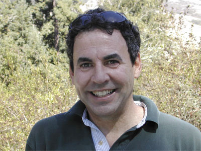
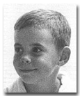

|
 |
||
David Girard Henderson |
||
|
David Girard Henderson was born in San Jose, California. He owned and operated his own restaurant in Chico, California, later worked as a producer in Los Angeles, and eventually pursued business and real estate ventures in Northern California. |
||
| Important Facts | ||
| April 4, 1955 | David Girard Henderson was born on April 4, 1955, in San Jose, California. He was the third child of Alexander D. Henderson III and Patricia Ford. His middle name honors his great-uncle, Girard B. Henderson. |
 |
| 1957 | The family later relocated from California to Florida, where he attended Hillsboro Country Day School. | |
| 1975 | David worked in the restaurant business, owning and operating his own restaurant, The De Ja Vu Mining Company. He later worked in the film industry before pursuing business and real estate ventures in Northern California. | |
| April 17, 1982 | David was married and has two daughters. He was remarried on June 29, 2003. |

Last updated: October 6, 2026